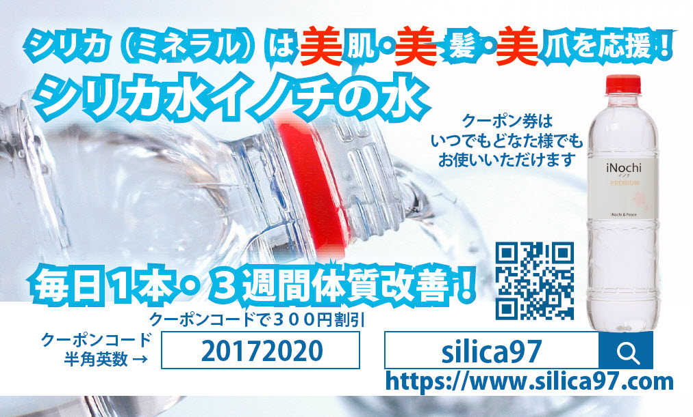
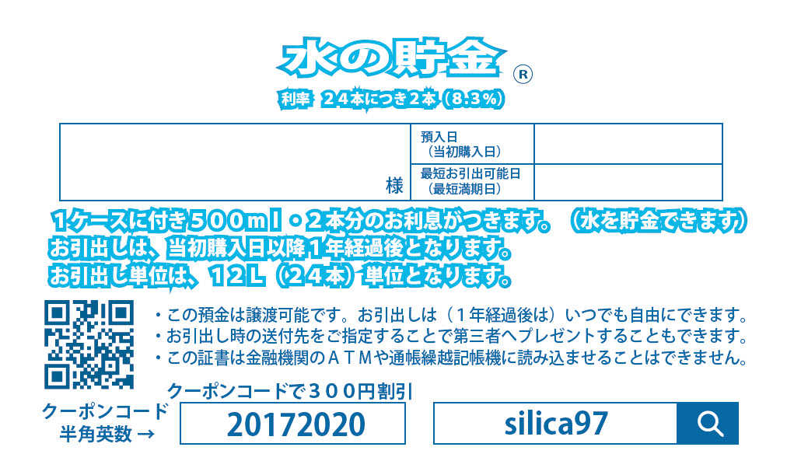

| ９倍速アフィリエイト | |
| 秋田秀一 | |
| サクセスキューブ株式会社 (2018) | |
副業疲れ・アフィリエイト疲れ
の人はいませんか？
【２０１８年版】
９倍速アフィリエイト
サクセスキューブ株式会社
本書は限りなく楽をしてお金を稼ぐための" とある方法 "をお伝えするものです。
ズバリその「キモ」をバラしますと・・・
クーポン券（割引券）を使ってお金儲けをしてもらう、
という副業モデルになっています。
そうです。
フリーペーパーなどによく付いているあのクーポン券です。
また本書そのものも、クーポン券としての役割を果たしています。
巻末にてご案内予定ですが、" とある方法 "に参加するためのクーポンを用意しています。良かったらご活用ください。
なので本書につきしては、割り切って手にしていただけましたらと思います。
この本からノウハウを身につけて行動したら、そのノウハウのおかげで実際にお金儲けができるようになる、というものではありません。
どうしても、その" とある方法 "に参加・チャレンジしてもらう必要があるからです。
いうならば・・・
アフィリエイト経験者でなかなか集客につながっていない、
さらにそこからのクリックや報酬発生にまで至っていない、
今からどう考えて、どう行動したらいいか迷っている、
という方への、新しい方向に目を向けるきっかけ・気分転換本です。
とんでもない本だ、という方はすぐにでもこの本を閉じてください。
他のノウハウを探されることをお薦めします。
日本初公開の副業モデル・副業プログラムだということで、まずは概略でも知っておこうか、という方はお進みいただけましたらありがたいと思っております。
まずは毎月５万円を、すぐに稼ぐ、ということを目標にスタートしてみませんか？
何といっても９倍速のアフィリエイトですから。
秋田秀一
実は、一般的なアフィリエイトというのは・・・
いろんな副業の中で、最高とはいいませんがお薦めしたいビジネスモデルです。
ネット上に資産を構築する上では、もしあなたが可能であれば、チャレンジしてみてはいかがでしょうか、とお薦めする副業モデルです。
副業初心者の方で、かつ、アフィリエイトという単語や、キーワードそのものをご存知ない方は、まずはここでイメージでいいですので簡単におさえてみてください。
アフィリエイトとは、口利き料・口コミ料がもらえるビジネスモデルです。
・ハウスメーカーで住宅を建てた人が、そのハウスメーカーにお客さまを紹介したら謝礼がもらえたり・・・
・ある美容室を利用しているお客さまが、その美容室に友人を連れていったら謝礼がもらえたり、自分の料金が一部割引サービスを受けられたり・・・
・もっと身近な例だと、フリーペーパーなどのクーポン券を使って居酒屋などのお店を利用すると、幹事さんの分の料金がタダになったり・・・
といったようなことを身近に見たり聞いたりしたことはありませんか。
要は、お客さまを紹介してくれたらお礼をしますよ、というものです。
昔から存在していたビジネスモデルです。
最近ではこれと同じコトがネットでもできるようになっています。
それが、まさにアフィリエイト、と呼ばれているものなのです。
※サービスそのものについては別の名前がついているものもあります。
グーグルさんのアドセンスだったり、
Amazonさんのアソシエイツだったり、です。
普通のアフィリエイトがリアルな世界での口利き料・紹介料と違うのは、ネット（ブログ・サイト・メルマガ等）経由なので、この人から紹介をしてもらった、という意識があまりないといった点です。
逆に紹介する方も、いつ何時、誰に紹介したという実感・手応えがないのが普通の状態です。
つまり、ネットの場合はリンクをクリックするという形になることから、知らない間にお礼（報酬）が発生している、ということもたくさんあり得るのです。
繰り返しますが、楽天さんやアマゾンさんといったメジャーなところのネット通販でも広く行われているビジネスモデルです。
そういった仕組みに乗っかって副収入を稼ごうという人たちは・・・自らのブログを開設したり、サイトを構築したりして集客をして、そこからクリックでの報酬獲得につなげようと考えて行動しています。
アフィリエイトがどういう感じで副業・お金儲けにつながるのかというと・・・
読者の多いブログを運営している人なら、ブログ記事の中に、またはブログ全体の空いたスペースなどに、広告を掲載することで、クリックしてくれたお客さまからのお礼（報酬）を手にすることができる、という副業モデルになっています。
もちろん人によって毎月手にできる金額には差があります。
毎月１０万円、２０万円というレベルではなくて
毎月１００万円、３００万円、さらにもっとたくさんのお金を稼いでいるような人たちも存在します。
不労収入ということでは、最高に素晴らしい副業だと言えるかも知れません。
ですから、もしあなたが今からネットビジネスにチャレンジしよう、副業で稼ごう、と思ったら・・・
自分の余暇時間や得意・不得意、ライフスタイル等々にマッチした副業を探すことになるかと思いますが、一度は、アフィリエイトを検討の対象に加えることをお薦めします。
ただし・・・誰しもが、間違いなく稼げるというわけではありません。
そこだけは注意です。
また、ライバルが多かったりもします。
たとえば、ダイエットというテーマでブログを運営するとなると、もの凄い数のライバルブログが存在することになったりします。
それでも、ネット上に資産を構築することができる可能性があるもの、ということだけは間違いありません。
いいことだらけのように見えますが、ただ一つだけデメリットがあります。
それは・・・成果が得られるようになるまで、それなりの時間がかかるというものです。
副業としてみた場合には、パート・アルバイトのように労働収入がすぐに得られるというものではありません。
もっとも、パート・アルバイトでも現金収入が入るのが月末だったり、翌月の給料日だったりしますので、どうしても時間的なズレはあります。
一般的なアフィリエイトは、資産としてお金を産んでくれる可能性のあるものです。
ただ、自分の口座に入金されるようになるまでが、結構、時間がかかるというものでもあるのです。
日頃の成果が出て、本当に手元にお金が入るまでのデメリットを解決したものが、今回本書でご案内しているモデルになります。
乞うご期待、です。
あなたはネットで必要な情報や調べものをする時に、検索エンジンを使ったことがあるかと思います。
たとえば、「花粉症 対策」というようにして探したりするはずです。
この時、１ページ目にめぼしい情報がなかったから、２ページ目、３ページ目と、さらにずっと探していきますか？
たぶん、ほとんどが１ページ目で終わるはずです。
さらに調べるにしても２ページ目くらいまでが多いのではないでしょうか。
それだけ検索エンジン側の精度（人工知能・ＡＩ）が進化・進展しているというのもありますが・・・
１ページ目だけでこと足りてしまうのが普通です。
仮に先の「花粉症 対策」で検索するとネット上には、約３００万件くらいのページがありますよ、と表示されるはずです。
つまり、その「花粉 対策」というキーワードで、あなたのブログやサイトを検索結果の１ページ目に表示させて、みんなに（そのキーワードで検索した人に）見てもらおうと、するなら・・・
（今から参入する予定のあなたにとっての）
ライバルが、今現在でも約３００万件存在する、ということになります。
その中で、１ページ目に表示されるようにするには、実は並大抵の努力では足らないのです。
もちろん、ちゃんと人工知能の「くせ」を先回りしてブログ・サイトをつくればいいのですが・・・
（運よくラッキーといった感じで１ページ目に表示される例もあります）
ライバルはとんでもなく多い、ということだけは認識できるかと思います。
中途半端な覚悟では、トップランナーにはなれません。
また、頑張ってブログ・サイトをつくっても、１ページ目に表示されるようになるには、それなりに時間がかかる上に、頑張れば必ず１ページ目に表示されるという保証はありません。
現実的な「壁」として、それをクリアするためにはかなりの努力が必要だということになります。
あなたは、その頑張りができますか？というモチベーション的なことも大きな要因になってきます。
一般的なブログを最初から立ち上げて記事を投稿していくとしたら・・・
最低でも、どのくらいの量を投稿したら検索エンジンが評価してくれるだろうか？
ご存知ですか。
もちろん例外もありますが・・・新規でスタートしたブログが一般的には上位表示されるためには、文字数３０００文字～５０００文字～１００００文字の記事を２００記事、３００記事、５００記事と積み上げていって初めて評価される、ということが言われています。
３０００文字といったら、原稿用紙４００字詰めで７枚半です。
毎日毎日のように、原稿用紙で７枚半の文章を書けますか、投稿できますか。
ただ、日記のように１日の経過などを、感想などを書くものではありません。
そんなものでも読者が読んでくれるとしたら、それは・・・
芸能人や有名なアスリートの日記くらいです。
テーマやキーワードを決めて、読者が読んでためになる情報、読者が困っている問題が解決できるような情報、探していた情報がまさに「あなたのブログにあった」と喜んでもらえるような情報が、あなたのブログにあるかどうか、ということです。
さらに評価されるだけの一定のボリュームであるかどうか、ということです。
これって気の遠くなるような話だと思いませんか。
繰り返しますね、例外はあります。
記事数が２０記事、３０記事でも評価されて検索結果の１ページ目に表示されることもあります。
でも、それは検索エンジンが好きな・評価されるような、記事（コンテンツ）になっているということです。
それを狙って書ける人はいいですけど、普通の人はまず最初はその域まで到達できていませんし、ノウハウ・スキルも不十分です。
それで、ある程度の量・ボリュームで質を高めることをせざるを得ないのです。
やるべきこと、勉強すべきこと、調べないといけないことなど・・・たくさんありすぎて困るくらいです。
では、そういった努力した場合に、どのくらいからお金になるものでしょうか。
ネット上では、１年とか１年半といった体験談などもよく見られます。
まあ、半年から１年くらいは覚悟しておくことが必要かと思います。
さらに一般的に言われているようなブログアフィリエイトをまったくの新規からスタートした場合に、だいたいどのくらいの時期からお金が入るものだろうか、というのを検討してみます。
【前提】
・毎日毎日、１記事を作成して記事投稿する。
・１記事、約２０００文字～３０００文字の分量だとする。
・２００記事到達で検索エンジンから評価されて、集客できるようになり始めると仮定する。
となれば・・・
１ヶ月目・・・毎日１記事作成・・・計３０記事
２ヶ月目・・・３０記事作成・・・・計６０記事
３ヶ月目・・・３０記事作成・・・・計９０記事
４ヶ月目・・・３０記事作成・・・計１２０記事
５ヶ月目・・・３０記事作成・・・計１５０記事
６ヶ月目・・・３０記事作成・・・計１８０記事
７ヶ月目・・・３０記事作成・・・計２１０記事
８ヶ月目・・・３０記事作成・・・計２４０記事
９ヶ月目・・・３０記事作成・・・計２７０記事
10ヶ月目・・・３０記事作成・・・計３００記事
これでいくと、７ヶ月目終了時点の少し前で２００記事オーバーです。
それで、８ヶ月目から集客できるようになる、と仮定します。
となれば、８ヶ月目の報酬発生分が（普通は）翌々月の１０ヶ月目に入金される、というのが一般的となりますので、あなたが現金を手にできるのは、スタートしてから１０ヶ月目となることが見込まれます。
毎日毎日、疲れた日も、体調不良の日も２０００文字から３０００文字以上の記事を書き続けて・・・
やっと１０ヶ月目に報酬発生となった場合での現金が入金される、ということになってしまいます。
何と何と、１０ヶ月目です。
苦労して苦労して半年以上投稿し続けて、やっと１０ヶ月目に現金が手に入る、かも知れない、という形です。
こういう努力・頑張りの結果として、ネット上に「資産」を構築することができるのです。
あなたはヤレますか？
もし今からチャレンジしよう、トライしようという思いがあるなら、あなたは覚悟できますか？
それができる、という人はぜひスタートしてみてください。
将来が楽しみです。
ただ、普通の人はなかなかそこまでの熱意・持続力・集中力が続きません。
たいていの人は挫折します。
もし、この１０ヶ月目に入金されるようなアフィリエイトではなくて、最短１５日、最長でも４５日で入金される副業モデルがあったら、しかもそれがアフィリエイトだったら・・・
さらに、継続報酬だったら・・・
チャレンジしてみたくは、なりませんか？
さらにさらに・・・
ネットでの頑張りとは別に、リアルな現実世界で、あなたの身の回りでできてしまう副業モデルだったら・・・
これまでネットでのアフィリエイトをやっている人なら、何となく、併用できませんか？
できそうにありませんか？
何となく、ワクワクしてきませんか？
次は、いよいよそのワクワクする副業モデルについてご案内させていただきます。
何と比較しての９倍速なの？という疑問があることと思います。
先に、通常のブログアフィリエイトだと検索エンジンに評価されて、集客につながって、アフィリエイト報酬が入り始めるのが・・・
コンテンツとしての記事が約２００記事を超えて、実際にお金になるのが約１０ヶ月後くらいかな、という話をしました。
９倍速のアフィリエイトは、今日、仕掛けづくりをした場合に、夕方か夜にでも報酬が発生すれば、来月１５日には現金化されます。
あなたの口座に入金されるシステムになっています。
ということは、今月の月末に獲得できたら、
来月の１５日まで約半月、１５日。
今月の初日に獲得できたら、
来月の１５日まで約１．５ヶ月、４５日です。
平均したら約１ヶ月で現金化です。
ブログアフィリエイトが成果発生・現金化まで約１０ヶ月、
本書でご案内している副業プログラムが現金化まで約１ヶ月・・・
１０ヶ月－１ヶ月＝９ヶ月の差があります。
９ヶ月も余計に待つ必要はありません。
１ヶ月で口座に稼いだお金が入ることになります。
時間的には１/９です。
９倍の速さです。
９倍速のアフィリエイト です。その成果発生までのスピードを感じてみてください。
実は・・・
ここでご案内している９倍速のアフィリエイトは、別名を・・・
「 ポケットマネー・スパイラル 」と呼んでいます。
ステップ１からステップ３までのたった３段階で実行するプログラムです。
ただし、実際にあなたがやることは「ステップ１」だけです。
それだけで、お金が入ります。
現金収入が入ります。
何といってアフィリエイトですから。
すこしだけその３つのステップについて触れたいと思います。
【ステップ１】
あなたがやる、仕掛けづくりです。
１回あたり、２、３分でできるものです。５分もやれば十分すぎるくらいです
これが、ポケットマネーを増やすための仕掛けづくりです。
いろいろと試行錯誤しながらでもチャレンジしてみませんか。
やればやるほど、ポケットマネーが増える機会が増大します。
あなたがやるのは、ここまでです。
あとは、遠足前夜気分のような気持ちで毎日を過ごしてください。
期待して、待つだけです。
【ステップ２】
ポケットマネー・スパイラルの「スパイラル」の部分です。
あなたの仕掛けづくりを受けて、あなたのための報酬アップを応援します。
実際に、いろいろ「やる」のは、あなたではありません。
何と、あなたの仕掛けづくりを引き継いで、私ども（弊社）がやります。
あなたはノータッチです。
あなたの知らないところで、あなたに報酬が発生します。
しかも、継続報酬です。
たぶん、リアルな世界でこんなビジネスモデルは他にはない、と思っています。
自画自賛で恐縮ですが、どうぞ期待してください。
【ステップ３】
あなたが、入金確認するステップです。
毎月１５日にあなたに前月１ヶ月分の報酬が入金されます。
楽しみにしてください。
ワクワクしておいてください。
あなたは、毎月毎月【ステップ３】で、入金額を確認するだけです。
もちろん、【ステップ２】からの報酬もあなたに振り込まれます。
【ステップ２】で、あなたが何もしていなくても、あなたの報酬として受け取ってください。
以上が、ポケットマネー・スパイラルの概要です。
もちろん、言葉足らず、説明不十分、なところが多々あったと思います。
※詳しい説明をサイトにてご案内予定です。
どうぞ、今の段階ではご了承ください。
【本書の副業プログラム最大の特徴は？】
即効性ありの副業プログラムです。
ということは、逆に言うと・・・自分に合っているかどうか、自分のライフスタイルに合う・合わない、自分にも稼げる・自分には稼げない、というのがすぐにわかる、というものでもあります。
なんと・・・
『お昼間に始めて、夕方には現金収入が発生する』可能性のある副業プログラム！
です。
正々堂々と職場で副業を行うことを認めているような会社はまずありません。
ですから、あなたがの自分の職場で本書に紹介している副業プログラムを実践しようというのは無理かも知れません。
限りなく可能性は低くなりますが・・・
実は、ゼロではありません。可能性があるのです。
というのは、このプログラムの対象商品はミネラルウォーターだからです。
職場・自分の机にジュースや缶コーヒーや緑茶飲料を持ち込めるところ（会社）は普通にあると思います。
サラリーマンの方は自分の机の上に飲みものを用意して、時には飲んだりもしているはずです。
商品が飲みものだったら職場での勤務中に机の上に置いていても不自然ではありませんし、誰も、何も疑いません。
あなたが通販サイトから商品を購入して、その商品の送付先を職場にした場合は、他の同僚の方たちの目にとまる可能性があります。
元々、あなたが職場で飲もうとして用意したもの（取り寄せたもの）を
（特にミネラルウォーターだと水分補給だと誰しも理解できますから）誰も、あれこれ、とやかく言うことはないはずです。
そのお取り寄せ商品が本副業プログラムの対象となる商品であれば・・・
職場で、堂々と他人の目に触れさせることが可能だというわけです。
その時に、（他の同僚の人たちから見て）珍しい商品であれば、誰しもが興味を（一瞬でも）示してくれる可能性は大です。
ここまで聞いてみて・・・
何かしら、面白そうな副業プログラムだとは思いませんでしたか？
それにプラスして、もしあなたがネットビジネスをやるとしたら、
例えばブログアフィリエイトにもチャレンジしようするならば、さらにさらに、副収入を稼ぐチャンスが広がります。
いろいろと広がる可能性のある副業モデルかも知れないと期待できませんか？
一般的なブログアフィリエイトは、お金が入ってくるようになるまでの時間差が、個人のスキルごとに、テーマやキーワードごとに、かなり違いが発生してしまうという話はしました。
ただ、ネット上に資産を構築するという意味では、ブログアフィリエイトは大きな意義があります。
それこそほったらかしでの集客、報酬発生が期待できるものであることは間違いありません。
（成功したら、の話ではありますが）
それで、ネット上の資産からお金が入りだすまでの間に、お金儲けのモチベーションを切らさないために、リアルな世界でのアフィリエイトにも、チャレンジしてみる、という手があります。
本書でご案内しているクーポン券アフィリエイトをしてみる、ということになります。
なぜなら、即効性バツグンの副業モデルだからです。
ネット上の資産からお金が入るようになるまで、限りなくほったらかしで、ほぼ何もしないような感じの副業ですぐに稼ぎ始めることができるからです。
もし、ネット上に資産を構築するブログアフィリエイトと、クーポン券アフィリエイトを併用するなら、副収入＝財布の入口が２つになるようなものです。
チャレンジすることを決意・決心して、トライしてすぐにでも結果＝報酬獲得となれば・・・たとえネット上に資産構築を目指すブログアフィリエイトの成果が少し遠い未来になっても、それなりにモチベーションも維持できるはずです。
そして・・・
もし実際に、複数の財布の入口を確保できることになれば、万々歳ですね。
毎月毎月のようにあなたの口座に振り込まれる入金額をワクワクしながら期待しておいてください。
少ないタネ銭からでも少しずつでも資産を増やしていって、労働収入から権利収入へと比重を移して、不労所得型の副収入がずっと入り続ける権利収入者になってください。
賃貸マンションや貸駐車場を所有しているのと一緒です。
毎月、遊んでいても収入が入ってくるシンガーソングライターが著作権料をもらい続けることができるのと同じようなものです。
繰り返しますが、ここで案内している副業プログラムは、たった３つのステップです。
しかも、あなたが実践するのは最初のステップ１と入金確認のステップ３だけです。
ステップ２は、すべて私ども（弊社）が行います。
全体の約８割は私どもです。
あなたは、たったの２割だけの実行です。
まさに" 半自動 "というよりも、限りなく全自動に近いレベルの副業モデルなのです。
これでもやりたくない、ということでしたら他の副業やネットビジネスから自分に適したモデルを選択されてください。
話が少しばかりそれるかも知れませんが・・・
例えば、職場に何かしらのお菓子等を差し入れしたりすることはありませんか。
「これ、お取り寄せしたのだけど・・・良かったら・・・」
「これ、知り合いの人からもらったのだけど・・・」
「これ、食べてみない（飲んでみない）・・・」
といったような会話ができる人であれば、十分に仕掛けづくり可能です。
クーポン券アフィリエイト＝ポケットマネー・スパイラルは、労働収入型の副業モデルではありません。
資産を形成して、不労所得を手にする不労収入型の副業モデルです。
過酷な文字数の記事を２００記事、３００記事と投稿するような従来型のブログアフィリエイトのようなものでもありません。
１回当たりの仕掛けづくりは、２、３分で終了するものです。
あなたの代わりに、割引券≒クーポン券に働いてもらうビジネスモデルです。
しかも、「名刺入れ」に入れて持ち運べるものです。
重さ１グラム程度です。１円玉とほぼ同じ重さです。
仕掛けづくりの用意・準備のために常に携帯する形でも全く苦になりません。
職場などでクーポン券を配布するのができない人は、行きつけのお店や顔なじみの店長さん・ママさんなどに配布をお願いすることでも仕掛けづくりは完了します。
本格的に検討を開始する前に・・・
割引券（クーポン券）とそれにつながる商品・サイトを見て、売れるかもと思われた方は、ぜひ私どもとＷＩＮ－ＷＩＮの関係になっていただきたいと思っています。
「こりゃ、ダメだ」と思われた方はココから先は無用かと思います。
本書を手にとっていただいて本当に申し訳ありませんでした。
そしてお時間をとらせまして本当にすいませんでした。
重ねてお詫び申し上げます。
【あなたの目と感性でチェックしていただきたいもの・１】

あなたの身近にいらっしゃる方々は、こんな割引券（クーポン券）をもらわれたら、この商品を買ってみようかな、と感じてもらえると思いますか。
もし、たぶんダメだろうね、という時には本書でご案内しているビジネスモデルは見込みが薄いということになりますから、どうぞ慎重に検討されてください。
【あなたの目と感性でチェックしていただきたいもの・２】

もう一つのクーポン券です。
「水の貯金」というネーミングは商標登録済みですので、他社との差別化には貢献するかと思います。
ただ、それに対して敏感に消費者が反応してくださるものかどうか、ということをあなたご自身の皮膚感覚で感じてみてください。
ダメだな、と感じた時はその感性・感情を大切してください。
本書で案内しているプログラムには手を出さない方が賢明だと思います。
【あなたの目と感性でチェックしていただきたいもの・３】
最大のチェック項目です。
元々の商品そのものについてお確かめください。
本当に売れる商品なのか、リピートしてもらえる商品なのか・・・という点です。
いかがだったでしょうか。
あなたが感じたことはＧＯサインでしょうか、それともＮＧサインだったでしょうか。
どうぞその感性を大切にしてください。
【注意点】
人との会話ができない、コミュニケーションがとれない、といったような方への、老婆心ながらのアドバイスです。
そんな方は、どうぞご遠慮された方がいいかと思います。
また、職場自体がピリピリした雰囲気の職場で、同僚・仲間の方々とも打ち解けるような職場ではない場合、さらにお友だちもご家族も、行きつけ・知り合い・顔なじみのお店なども一切ない、という方も厳しいかも知れませんね。
いずれにしても・・・顔出しなし、ネットだけで、在宅だけで、稼ぐ・稼ぎたいという方には不向きな副業プログラムです。
十分にご注意ください。
ここまで一方的に「何のこと？」といったような話を続けてきました。
あらためてお詫び申し上げたいと思っています。
実は、私はこの本の中で対象となった商品を製造販売している「者」です。
商品の個人的販売代理店のような方、ご協力していただける方を募集したくて本書を発行しました。
もし、私の商品に興味を持っていただける方がいらっしゃいましたらありがたいと思っております。
申し遅れましたが、私は秋田秀一と申します。
詳しいプロフィールはこちらに用意してあります。
良かったら、（自称）日本初公開の副業プログラムですので、見ていただけましたらうれしい限りです。
また、ご興味がなかった時は、身近で興味のありそうな方にぜひお薦めしていただけましたら幸いです。
【特典のご案内】
本書を手していただいた方だけの特典をご用意しました。
特典【１】割引券（クーポン券）
クーポンコードをお使いいただけます。
クーポンコード：amazon
入力していただきますと、５０００円引きになります。
特典【２】２００名さまだけへの追加特典（ページ内参照ください）への参加権利
もし、２００名さま枠をオーバーしていても、上記クーポンコードで参加された方には、特別に２００名さま特典の権利をプレゼントさせていただきます。
どうぞ将来を楽しみにお待ちくださいませ。
人生の一生をグランド一周に例えるなら・・・
今、あなたがどのあたりを（第２コーナーとか第３コーナーといった）走っているところかは不明ですが、一つだけ言えることがあります。
間違いなく人生は一度きり、今が本番の人生だということです。
リハーサルなしの一度きりの人生です。
どうぞ経済的成功と時間の自由を創造されてください。
そのためのお手伝い、第一歩のためのきっかけになれるかと思っております。
ここまで本当にありがとうございました。
秋田秀一
９倍速アフィリエイト
サクセスキューブ株式会社
Copyright (c) Success Cube All Rights Reserved.
本文書は著作権法によって守られているものです。
無断での転載・利用等禁止